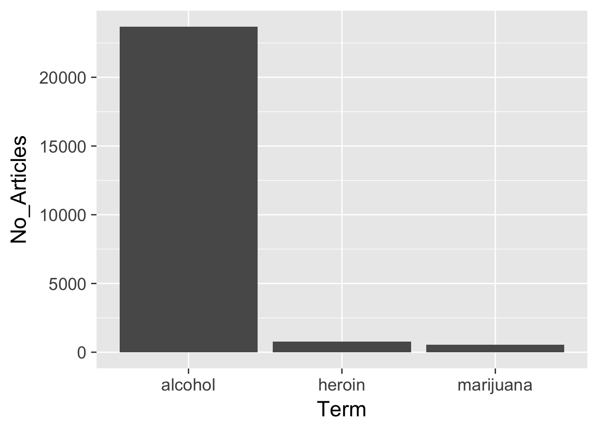

Getting data from the web: API access
Objectives
- Identify multiple methods for obtaining data from the internet
- Define application program interface (API)
- Explain authentication keys and demonstrate secure methods for storing these keys
- Demonstrate how to use canned packages in R to access APIs
- Practice gathering data from Twitter API using the
twitteRpackage in R
library(tidyverse)
library(knitr)Methods for obtaining data online
There are many ways to obtain data from the Internet. Four major categories are:
- click-and-download on the internet as a “flat” file, such as .csv, .xls
- install-and-play an API for which someone has written a handy R package
- API-query published with an unwrapped API
- Scraping implicit in an html website
Click-and-Download
In the simplest case, the data you need is already on the internet in a tabular format. There are a couple of strategies here:
- Use
read.csvorreadr::read_csvto read the data straight into R - Use the
downloaderpackage orcurlfrom the shell to download the file and store a local copy, then useread_csvor something similar to read the data into R- Even if the file disappears from the internet, you have a local copy cached
Even in this instance, files may need cleaning and transformation when you bring them into R.
Data supplied on the web
Many times, the data that you want is not already organized into one or a few tables that you can read directly into R. More frequently, you find this data is given in the form of an API. Application Programming Interfaces (APIs) are descriptions of the kind of requests that can be made of a certain piece of software, and descriptions of the kind of answers that are returned. Many sources of data - databases, websites, services - have made all (or part) of their data available via APIs over the internet. Computer programs (“clients”) can make requests of the server, and the server will respond by sending data (or an error message). This client can be many kinds of other programs or websites, including R running from your laptop.
Install and play packages
Many common web services and APIs have been “wrapped”, i.e. R functions have been written around them which send your query to the server and format the response.
Why do we want this?
- provenance
- reproducible
- updating
- ease
- scaling
Sightings of birds: rebird
rebird is an R interface for the ebird database. e-Bird lets birders upload sightings of birds, and allows everyone access to those data.
install.packages("rebird")library(rebird)Search birds by geography
The ebird website categorizes some popular locations as “Hotspots”. These are areas where there are both lots of birds and lots of birders. Once such location is at Lincoln Park Zoo in Chicago. You can see data for this site at http://ebird.org/ebird/hotspot/L1573785
At that link, you can see a page like this:

Lincoln Park Zoo
The data already look to be organized in a data frame! rebird allows us to read these data directly into R. (The ID code for Lincoln Park Zoo is **“L1573785**)
ebirdhotspot(locID = "L1573785") %>%
as_tibble()## Warning: `rbind_all()` is deprecated. Please use `bind_rows()` instead.## # A tibble: 5 × 11
## lng locName howMany sciName
## <dbl> <chr> <int> <chr>
## 1 -87.63272 Lincoln Park Zoo, Chicago 1 Anas americana
## 2 -87.63272 Lincoln Park Zoo, Chicago 1 Bucephala clangula
## 3 -87.63272 Lincoln Park Zoo, Chicago 2 Branta canadensis
## 4 -87.63272 Lincoln Park Zoo, Chicago 20 Sturnus vulgaris
## 5 -87.63272 Lincoln Park Zoo, Chicago 3 Cardinalis cardinalis
## # ... with 7 more variables: obsValid <lgl>, locationPrivate <lgl>,
## # obsDt <chr>, obsReviewed <lgl>, comName <chr>, lat <dbl>, locID <chr>We can use the function ebirdgeo to get a list for an area. (Note that South and West are negative):
chibirds <- ebirdgeo(lat = 41.8781, lng = -87.6298)## Warning: `rbind_all()` is deprecated. Please use `bind_rows()` instead.chibirds %>%
as_tibble() %>%
str()## Classes 'tbl_df', 'tbl' and 'data.frame': 127 obs. of 11 variables:
## $ lng : num -87.9 -87.9 -87.6 -87.6 -87.6 ...
## $ locName : chr "Franklin Park, IL" "Franklin Park, IL" "Olive Park, Chicago" "Olive Park, Chicago" ...
## $ howMany : int 3 1 1 17 8 3 2 2 4 22 ...
## $ sciName : chr "Junco hyemalis" "Melospiza melodia" "Corvus brachyrhynchos" "Larus delawarensis" ...
## $ obsValid : logi TRUE TRUE TRUE TRUE TRUE TRUE ...
## $ locationPrivate: logi TRUE TRUE FALSE FALSE FALSE FALSE ...
## $ obsDt : chr "2017-02-23 13:30" "2017-02-23 13:30" "2017-02-23 13:15" "2017-02-23 13:15" ...
## $ obsReviewed : logi FALSE FALSE FALSE FALSE FALSE FALSE ...
## $ comName : chr "Dark-eyed Junco" "Song Sparrow" "American Crow" "Ring-billed Gull" ...
## $ lat : num 41.9 41.9 41.9 41.9 41.9 ...
## $ locID : chr "L4265093" "L4265093" "L789958" "L789958" ...Note: Check the defaults on this function. e.g. radius of circle, time of year.
We can also search by “region”, which refers to short codes which serve as common shorthands for different political units. For example, France is represented by the letters FR
frenchbirds <- ebirdregion("FR")## Warning: `rbind_all()` is deprecated. Please use `bind_rows()` instead.frenchbirds %>%
as_tibble() %>%
str()## Classes 'tbl_df', 'tbl' and 'data.frame': 211 obs. of 11 variables:
## $ lng : num 4.75 4.75 4.75 4.75 7.02 ...
## $ locName : chr "FR-Rhône-Alpes-Félines-385 Route de Larin le Haut - 45,3064x4,7488 - 27 Dec 2016, 10:30" "FR-Rhône-Alpes-Félines-385 Route de Larin le Haut - 45,3064x4,7488 - 27 Dec 2016, 10:30" "FR-Rhône-Alpes-Félines-385 Route de Larin le Haut - 45,3064x4,7488 - 27 Dec 2016, 10:30" "FR-Rhône-Alpes-Félines-385 Route de Larin le Haut - 45,3064x4,7488 - 27 Dec 2016, 10:30" ...
## $ howMany : int 5 4 4 1 1 4 1 1 10 3 ...
## $ sciName : chr "Cyanistes caeruleus" "Parus major" "Prunella modularis" "Buteo buteo" ...
## $ obsValid : logi TRUE TRUE TRUE TRUE TRUE TRUE ...
## $ locationPrivate: logi TRUE TRUE TRUE TRUE FALSE TRUE ...
## $ obsDt : chr "2017-02-23 13:53" "2017-02-23 13:53" "2017-02-23 13:53" "2017-02-23 13:53" ...
## $ obsReviewed : logi FALSE FALSE FALSE FALSE FALSE FALSE ...
## $ comName : chr "Eurasian Blue Tit" "Great Tit" "Dunnock" "Common Buzzard" ...
## $ lat : num 45.3 45.3 45.3 45.3 43.7 ...
## $ locID : chr "L5182324" "L5182324" "L5182324" "L5182324" ...Find out WHEN a bird has been seen in a certain place! Choosing a name from chibirds above (the Bald Eagle):
warbler <- ebirdgeo(species = 'Setophaga coronata', lat = 41.8781, lng = -87.6298)## Warning: `rbind_all()` is deprecated. Please use `bind_rows()` instead.warbler %>%
as_tibble() %>%
str()## Classes 'tbl_df', 'tbl' and 'data.frame': 5 obs. of 11 variables:
## $ lng : num -87.7 -87.6 -87.7 -87.8 -87.7
## $ locName : chr "Racine and Dickens" "Montrose Harbor, Chicago" "US-IL-Evanston-2650 Princeton Ave" "Harms Woods/Glenview Woods Forest Preserve" ...
## $ howMany : int 1 1 1 1 1
## $ sciName : chr "Setophaga coronata" "Setophaga coronata" "Setophaga coronata" "Setophaga coronata" ...
## $ obsValid : logi TRUE TRUE TRUE TRUE TRUE
## $ locationPrivate: logi TRUE FALSE TRUE FALSE TRUE
## $ obsDt : chr "2017-02-19 13:57" "2017-02-19 13:00" "2017-02-11 15:00" "2017-02-10 14:05" ...
## $ obsReviewed : logi FALSE FALSE FALSE FALSE FALSE
## $ comName : chr "Yellow-rumped Warbler" "Yellow-rumped Warbler" "Yellow-rumped Warbler" "Yellow-rumped Warbler" ...
## $ lat : num 41.9 42 42.1 42.1 42.1
## $ locID : chr "L5473493" "L2057479" "L3668585" "L152649" ...rebird knows where you are:
ebirdgeo(species = 'Setophaga coronata') %>%
as_tibble() %>%
kable()## Warning: As a complete lat/long pair was not provided, your location was
## determined using your computer's public-facing IP address. This will likely
## not reflect your physical location if you are using a remote server or
## proxy.## Warning: `rbind_all()` is deprecated. Please use `bind_rows()` instead.| lng | locName | howMany | sciName | obsValid | locationPrivate | obsDt | obsReviewed | comName | lat | locID |
|---|---|---|---|---|---|---|---|---|---|---|
| -87.44379 | Highland - Yard | 1 | Setophaga coronata | TRUE | TRUE | 2017-02-19 15:00 | FALSE | Yellow-rumped Warbler | 41.56890 | L4952762 |
| -87.65885 | Racine and Dickens | 1 | Setophaga coronata | TRUE | TRUE | 2017-02-19 13:57 | FALSE | Yellow-rumped Warbler | 41.92015 | L5473493 |
| -87.63860 | Montrose Harbor, Chicago | 1 | Setophaga coronata | TRUE | FALSE | 2017-02-19 13:00 | FALSE | Yellow-rumped Warbler | 41.96144 | L2057479 |
Searching geographic info: geonames
# install.packages(geonames)
library(geonames)API authentication
Many APIs require you to register for access. This allows them to track which users are submitting queries and manage demand - if you submit too many queries too quickly, you might be rate-limited and your requests de-prioritized or blocked. Always check the API access policy of the web site to determine what these limits are.
There are a few things we need to do to be able to use this package to access the geonames API:
- go to the geonames site and register an account.
- click here to enable the free web service
- Tell R your geonames username. You could run the line
options(geonamesUsername = "my_user_name")in R. However this is insecure. We don’t want to risk committing this line and pushing it to our public GitHub page! Instead, you should create a file in the same place as your .Rproj file. Name this file .Rprofile, and add
options(geonamesUsername = "my_user_name")to that file.
Important
- Make sure your
.Rprofileends with a blank line - Make sure
.Rprofileis included in your.gitignorefile, otherwise it will be synced with Github - Restart RStudio after modifying
.Rprofilein order to load any new keys into memory - Spelling is important when you set the option in your
.Rprofile - You can do a similar process for an arbitrary package or key. For example:
# in .Rprofile
options("this_is_my_key" = XXXX)
# later, in the R script:
key <- getOption("this_is_my_key")This is a simple means to keep your keys private, especially if you are sharing the same authentication across several projects. Remember that using .Rprofile makes your code un-reproducible. In this case, that is exactly what we want!
Using Geonames
What can we do? Get access to lots of geographical information via the various “web services”
countryInfo <- GNcountryInfo()countryInfo %>%
as_tibble() %>%
str()## Classes 'tbl_df', 'tbl' and 'data.frame': 250 obs. of 17 variables:
## $ continent : chr "EU" "AS" "AS" "NA" ...
## $ capital : chr "Andorra la Vella" "Abu Dhabi" "Kabul" "Saint John’s" ...
## $ languages : chr "ca" "ar-AE,fa,en,hi,ur" "fa-AF,ps,uz-AF,tk" "en-AG" ...
## $ geonameId : chr "3041565" "290557" "1149361" "3576396" ...
## $ south : chr "42.4284925987684" "22.6333293914795" "29.377472" "16.996979" ...
## $ isoAlpha3 : chr "AND" "ARE" "AFG" "ATG" ...
## $ north : chr "42.6560438963" "26.0841598510742" "38.483418" "17.729387" ...
## $ fipsCode : chr "AN" "AE" "AF" "AC" ...
## $ population : chr "84000" "4975593" "29121286" "86754" ...
## $ east : chr "1.78654277783198" "56.3816604614258" "74.879448" "-61.672421" ...
## $ isoNumeric : chr "020" "784" "004" "028" ...
## $ areaInSqKm : chr "468.0" "82880.0" "647500.0" "443.0" ...
## $ countryCode : chr "AD" "AE" "AF" "AG" ...
## $ west : chr "1.40718671411128" "51.5833282470703" "60.478443" "-61.906425" ...
## $ countryName : chr "Principality of Andorra" "United Arab Emirates" "Islamic Republic of Afghanistan" "Antigua and Barbuda" ...
## $ continentName: chr "Europe" "Asia" "Asia" "North America" ...
## $ currencyCode : chr "EUR" "AED" "AFN" "XCD" ...This country info dataset is very helpful for accessing the rest of the data, because it gives us the standardized codes for country and language.
Searching the Public Library of Science: rplos
PLOS ONE is an open-access journal. They allow access to an impressive range of search tools, and allow you to obtain the full text of their articles. Unlike geonames, rplos no longer requires an individual key to access the API.
install.packages("rplos")library(rplos)Let’s do some searches:
searchplos(q = "alcohol", fl = "id,title", limit = 10) %>%
kable()
|
|
Relative frequency plot
out <- plosword(list("alcohol", "heroin", "marijuana"),
vis = "TRUE")
out$table## No_Articles Term
## 1 23665 alcohol
## 2 766 heroin
## 3 541 marijuanaout$plot
Here is a list of options for the search.
Plots over time
plot_throughtime(terms = c("alcohol", "heroin", "marijuana"), limit = 200)## Warning: Removed 5 rows containing missing values (geom_path).
Scraping Twitter
install.packages("twitteR")library(twitteR)##
## Attaching package: 'twitteR'## The following objects are masked from 'package:dplyr':
##
## id, locationThere are several packages for R for accessing and searching Twitter. Twitter actually has two separate APIs:
- The REST API - this allows you programmatic access to read and write Twitter data. For research purposes, this allows you to search the recent history of tweets and look up specific users.
- The Streaming API - this allows you to access the public data flowing through Twitter in real-time. It requires your R session to be running continuously, but allows you to capture a much larger sample of tweets while avoiding rate limits for the REST API.
Packages
twitteRis the most popular package for R, but it only allows you to access the REST API.streamRis more complicated, but allows you to query the Streaming API from R.
Here, we are going to practice using the twitteR package to search Twitter.
OAuth authentication
OAuth is an open standard for authorization, commonly used as a way for Internet users to authorize websites or applications to access their information on other websites but without giving them the passwords. This still requires an API key, but is a bit more complicated to setup.
The first step is to create a Twitter application for yourself. In order to do this, you do need to have a registered Twitter account. Go to (https://apps.twitter.com/app/new) and log in. After filling in the basic info (make sure to set the “Callback URL” to “http://127.0.0.1:1410”), go to the Permissions tab and select “Read, Write and Access direct messages”. Make sure to click on the save button after doing this. In the Details tab, take note of your consumer key and consumer secret.
Store your API key and token using the
.Rprofilemethod. Edit.Rprofileand addoptions(twitter_api_key = "Your API key") options(twitter_api_token = "Your API secret")Restart RStudio to get the keys loaded into your environment.
Run from the console:
setup_twitter_oauth(consumer_key = getOption("twitter_api_key"), consumer_secret = getOption("twitter_api_token"))This will open your browser and take you to a page to authorize your app to access your Twitter account. You need this in order to search any content on Twitter.
At this point you should get a message back in RStudio “Authentication complete.” You’re done setting up the authentication for
twitteR.
You must do this in order to query Twitter from within a non-interactive session (i.e. an R Markdown document or using source() to run a script). If you do not, you will get an error because R will not be able to finish the authentication process without your input.
Searching tweets
## [1] "Using browser based authentication"tweets <- searchTwitter('#rstats', n = 5)
tweets## [[1]]
## [1] "Rbloggers: Chop It: Look up the Generating Data Frame Columns of a Formula Term https://t.co/Y25rPsRcxo #rstats #DataScience"
##
## [[2]]
## [1] "CSUNaturalSci: Today's best thing: #CatterPlots Plot your data points with cats. \n\nJust you know, because thanks internet.… https://t.co/i4Mh6WiyKi"
##
## [[3]]
## [1] "Beezel_Bug: RT @KirkDBorne: 24 #DataScience, R, #Python, Excel, and #MachineLearning Cheat Sheets: https://t.co/Xp6SxD3lAO #abdsc #BigData #Rstats #Dat…"
##
## [[4]]
## [1] "krimuthu: RT @KirkDBorne: 24 #DataScience, R, #Python, Excel, and #MachineLearning Cheat Sheets: https://t.co/Xp6SxD3lAO #abdsc #BigData #Rstats #Dat…"
##
## [[5]]
## [1] "dataandme: ICYMI, how to (w/ code) from scraping ⇨ viz: \"The animals of #actuallivingscientists\" by @ma_salmon… https://t.co/OzoVefbOx7"Searching users
Use getUser() which returns a user object that you can perform additional functions on. This only works for users with public profiles or those that have authorized your app.
clinton <- getUser("hillaryclinton")
clinton$getDescription()## [1] "Wife, mom, grandma, women+kids advocate, FLOTUS, Senator, SecState, hair icon, pantsuit aficionado, 2016 presidential candidate."clinton$getFriends(n = 5)## $`3004231`
## [1] "SnoopDogg"
##
## $`3153892631`
## [1] "RobbyMook"
##
## $`18730233`
## [1] "daniellekantor"
##
## $`4732338444`
## [1] "RyanForRecovery"Tidying tweets
By default twitteR returns tweets in complex lists.
str(tweets)## List of 5
## $ :Reference class 'status' [package "twitteR"] with 17 fields
## ..$ text : chr "Chop It: Look up the Generating Data Frame Columns of a Formula Term https://t.co/Y25rPsRcxo #rstats #DataScience"
## ..$ favorited : logi FALSE
## ..$ favoriteCount: num 0
## ..$ replyToSN : chr(0)
## ..$ created : POSIXct[1:1], format: "2017-02-16 22:20:39"
## ..$ truncated : logi FALSE
## ..$ replyToSID : chr(0)
## ..$ id : chr "832354029871235072"
## ..$ replyToUID : chr(0)
## ..$ statusSource : chr "<a href=\"http://www.r-bloggers.com\" rel=\"nofollow\">r-bloggers.com</a>"
## ..$ screenName : chr "Rbloggers"
## ..$ retweetCount : num 0
## ..$ isRetweet : logi FALSE
## ..$ retweeted : logi FALSE
## ..$ longitude : chr(0)
## ..$ latitude : chr(0)
## ..$ urls :'data.frame': 1 obs. of 5 variables:
## .. ..$ url : chr "https://t.co/Y25rPsRcxo"
## .. ..$ expanded_url: chr "https://wp.me/pMm6L-Ckx"
## .. ..$ display_url : chr "wp.me/pMm6L-Ckx"
## .. ..$ start_index : num 69
## .. ..$ stop_index : num 92
## ..and 53 methods, of which 39 are possibly relevant:
## .. getCreated, getFavoriteCount, getFavorited, getId, getIsRetweet,
## .. getLatitude, getLongitude, getReplyToSID, getReplyToSN,
## .. getReplyToUID, getRetweetCount, getRetweeted, getRetweeters,
## .. getRetweets, getScreenName, getStatusSource, getText, getTruncated,
## .. getUrls, initialize, setCreated, setFavoriteCount, setFavorited,
## .. setId, setIsRetweet, setLatitude, setLongitude, setReplyToSID,
## .. setReplyToSN, setReplyToUID, setRetweetCount, setRetweeted,
## .. setScreenName, setStatusSource, setText, setTruncated, setUrls,
## .. toDataFrame, toDataFrame#twitterObj
## $ :Reference class 'status' [package "twitteR"] with 17 fields
## ..$ text : chr "Today's best thing: #CatterPlots Plot your data points with cats. \n\nJust you know, because thanks internet.… https://t.co/i4M"| __truncated__
## ..$ favorited : logi FALSE
## ..$ favoriteCount: num 0
## ..$ replyToSN : chr(0)
## ..$ created : POSIXct[1:1], format: "2017-02-16 22:18:01"
## ..$ truncated : logi TRUE
## ..$ replyToSID : chr(0)
## ..$ id : chr "832353364000243713"
## ..$ replyToUID : chr(0)
## ..$ statusSource : chr "<a href=\"https://about.twitter.com/products/tweetdeck\" rel=\"nofollow\">TweetDeck</a>"
## ..$ screenName : chr "CSUNaturalSci"
## ..$ retweetCount : num 0
## ..$ isRetweet : logi FALSE
## ..$ retweeted : logi FALSE
## ..$ longitude : chr(0)
## ..$ latitude : chr(0)
## ..$ urls :'data.frame': 1 obs. of 5 variables:
## .. ..$ url : chr "https://t.co/i4Mh6WiyKi"
## .. ..$ expanded_url: chr "https://twitter.com/i/web/status/832353364000243713"
## .. ..$ display_url : chr "twitter.com/i/web/status/8…"
## .. ..$ start_index : num 109
## .. ..$ stop_index : num 132
## ..and 53 methods, of which 39 are possibly relevant:
## .. getCreated, getFavoriteCount, getFavorited, getId, getIsRetweet,
## .. getLatitude, getLongitude, getReplyToSID, getReplyToSN,
## .. getReplyToUID, getRetweetCount, getRetweeted, getRetweeters,
## .. getRetweets, getScreenName, getStatusSource, getText, getTruncated,
## .. getUrls, initialize, setCreated, setFavoriteCount, setFavorited,
## .. setId, setIsRetweet, setLatitude, setLongitude, setReplyToSID,
## .. setReplyToSN, setReplyToUID, setRetweetCount, setRetweeted,
## .. setScreenName, setStatusSource, setText, setTruncated, setUrls,
## .. toDataFrame, toDataFrame#twitterObj
## $ :Reference class 'status' [package "twitteR"] with 17 fields
## ..$ text : chr "RT @KirkDBorne: 24 #DataScience, R, #Python, Excel, and #MachineLearning Cheat Sheets: https://t.co/Xp6SxD3lAO #abdsc #BigData "| __truncated__
## ..$ favorited : logi FALSE
## ..$ favoriteCount: num 0
## ..$ replyToSN : chr(0)
## ..$ created : POSIXct[1:1], format: "2017-02-16 22:17:40"
## ..$ truncated : logi FALSE
## ..$ replyToSID : chr(0)
## ..$ id : chr "832353277073301507"
## ..$ replyToUID : chr(0)
## ..$ statusSource : chr "<a href=\"http://www.nopage.com\" rel=\"nofollow\">Synz</a>"
## ..$ screenName : chr "Beezel_Bug"
## ..$ retweetCount : num 22
## ..$ isRetweet : logi TRUE
## ..$ retweeted : logi FALSE
## ..$ longitude : chr(0)
## ..$ latitude : chr(0)
## ..$ urls :'data.frame': 1 obs. of 5 variables:
## .. ..$ url : chr "https://t.co/Xp6SxD3lAO"
## .. ..$ expanded_url: chr "http://bit.ly/1I8pv5S"
## .. ..$ display_url : chr "bit.ly/1I8pv5S"
## .. ..$ start_index : num 87
## .. ..$ stop_index : num 110
## ..and 53 methods, of which 39 are possibly relevant:
## .. getCreated, getFavoriteCount, getFavorited, getId, getIsRetweet,
## .. getLatitude, getLongitude, getReplyToSID, getReplyToSN,
## .. getReplyToUID, getRetweetCount, getRetweeted, getRetweeters,
## .. getRetweets, getScreenName, getStatusSource, getText, getTruncated,
## .. getUrls, initialize, setCreated, setFavoriteCount, setFavorited,
## .. setId, setIsRetweet, setLatitude, setLongitude, setReplyToSID,
## .. setReplyToSN, setReplyToUID, setRetweetCount, setRetweeted,
## .. setScreenName, setStatusSource, setText, setTruncated, setUrls,
## .. toDataFrame, toDataFrame#twitterObj
## $ :Reference class 'status' [package "twitteR"] with 17 fields
## ..$ text : chr "RT @KirkDBorne: 24 #DataScience, R, #Python, Excel, and #MachineLearning Cheat Sheets: https://t.co/Xp6SxD3lAO #abdsc #BigData "| __truncated__
## ..$ favorited : logi FALSE
## ..$ favoriteCount: num 0
## ..$ replyToSN : chr(0)
## ..$ created : POSIXct[1:1], format: "2017-02-16 22:17:01"
## ..$ truncated : logi FALSE
## ..$ replyToSID : chr(0)
## ..$ id : chr "832353115257131009"
## ..$ replyToUID : chr(0)
## ..$ statusSource : chr "<a href=\"http://muthu.co\" rel=\"nofollow\">MuthuBot</a>"
## ..$ screenName : chr "krimuthu"
## ..$ retweetCount : num 22
## ..$ isRetweet : logi TRUE
## ..$ retweeted : logi FALSE
## ..$ longitude : chr(0)
## ..$ latitude : chr(0)
## ..$ urls :'data.frame': 1 obs. of 5 variables:
## .. ..$ url : chr "https://t.co/Xp6SxD3lAO"
## .. ..$ expanded_url: chr "http://bit.ly/1I8pv5S"
## .. ..$ display_url : chr "bit.ly/1I8pv5S"
## .. ..$ start_index : num 87
## .. ..$ stop_index : num 110
## ..and 53 methods, of which 39 are possibly relevant:
## .. getCreated, getFavoriteCount, getFavorited, getId, getIsRetweet,
## .. getLatitude, getLongitude, getReplyToSID, getReplyToSN,
## .. getReplyToUID, getRetweetCount, getRetweeted, getRetweeters,
## .. getRetweets, getScreenName, getStatusSource, getText, getTruncated,
## .. getUrls, initialize, setCreated, setFavoriteCount, setFavorited,
## .. setId, setIsRetweet, setLatitude, setLongitude, setReplyToSID,
## .. setReplyToSN, setReplyToUID, setRetweetCount, setRetweeted,
## .. setScreenName, setStatusSource, setText, setTruncated, setUrls,
## .. toDataFrame, toDataFrame#twitterObj
## $ :Reference class 'status' [package "twitteR"] with 17 fields
## ..$ text : chr "ICYMI, how to (w/ code) from scraping ⇨ viz: \"The animals of #actuallivingscientists\" by @ma_salmon… https://t.co/OzoVefbOx7"
## ..$ favorited : logi FALSE
## ..$ favoriteCount: num 1
## ..$ replyToSN : chr(0)
## ..$ created : POSIXct[1:1], format: "2017-02-16 22:17:01"
## ..$ truncated : logi TRUE
## ..$ replyToSID : chr(0)
## ..$ id : chr "832353112576884736"
## ..$ replyToUID : chr(0)
## ..$ statusSource : chr "<a href=\"http://bufferapp.com\" rel=\"nofollow\">Buffer</a>"
## ..$ screenName : chr "dataandme"
## ..$ retweetCount : num 0
## ..$ isRetweet : logi FALSE
## ..$ retweeted : logi FALSE
## ..$ longitude : chr(0)
## ..$ latitude : chr(0)
## ..$ urls :'data.frame': 1 obs. of 5 variables:
## .. ..$ url : chr "https://t.co/OzoVefbOx7"
## .. ..$ expanded_url: chr "https://twitter.com/i/web/status/832353112576884736"
## .. ..$ display_url : chr "twitter.com/i/web/status/8…"
## .. ..$ start_index : num 101
## .. ..$ stop_index : num 124
## ..and 53 methods, of which 39 are possibly relevant:
## .. getCreated, getFavoriteCount, getFavorited, getId, getIsRetweet,
## .. getLatitude, getLongitude, getReplyToSID, getReplyToSN,
## .. getReplyToUID, getRetweetCount, getRetweeted, getRetweeters,
## .. getRetweets, getScreenName, getStatusSource, getText, getTruncated,
## .. getUrls, initialize, setCreated, setFavoriteCount, setFavorited,
## .. setId, setIsRetweet, setLatitude, setLongitude, setReplyToSID,
## .. setReplyToSN, setReplyToUID, setRetweetCount, setRetweeted,
## .. setScreenName, setStatusSource, setText, setTruncated, setUrls,
## .. toDataFrame, toDataFrame#twitterObjTo get the data into a data frame, use
df <- twListToDF(tweets) %>%
as_tibble()
df## # A tibble: 5 × 16
## text
## * <chr>
## 1 Chop It: Look up the Generating Data Frame Columns of a Formula Term https:
## 2 Today's best thing: #CatterPlots Plot your data points with cats. \n\nJust yo
## 3 RT @KirkDBorne: 24 #DataScience, R, #Python, Excel, and #MachineLearning Ch
## 4 RT @KirkDBorne: 24 #DataScience, R, #Python, Excel, and #MachineLearning Ch
## 5 ICYMI, how to (w/ code) from scraping ⇨ viz: "The animals of #actuallivings
## # ... with 15 more variables: favorited <lgl>, favoriteCount <dbl>,
## # replyToSN <lgl>, created <dttm>, truncated <lgl>, replyToSID <lgl>,
## # id <chr>, replyToUID <lgl>, statusSource <chr>, screenName <chr>,
## # retweetCount <dbl>, isRetweet <lgl>, retweeted <lgl>, longitude <lgl>,
## # latitude <lgl>Exercise: Practice using twitteR
- Create a new R project on your computer. You can use Git for VCS or not - it is just for practice in class today
- Setup your API key with a Twitter app
- Authenticate using the
twitteRpackage in R - Find the 50 most recent tweets by President Donald Trump and store them in a data frame
userTimeline()can be used to retrieve tweets from individual userssearchTwitter()finds tweets from any public account that references the username
Click for the solution
setup_twitter_oauth(consumer_key = getOption("twitter_api_key"),
consumer_secret = getOption("twitter_api_token"))## [1] "Using browser based authentication"trump <- userTimeline("realDonaldTrump", n = 50)
trump_df <- twListToDF(trump) %>%
as_tibble()
trump_df## # A tibble: 50 × 16
## text
## * <chr>
## 1 Very much enjoyed my tour of the Smithsonian's National Museum of African A
## 2 One thing I will say about Rep. Keith Ellison, in his fight to lead the DNC
## 3 The so-called angry crowds in home districts of some Republicans are actual
## 4 'Americans overwhelmingly oppose sanctuary cities' https://t.co/s5QvsJWA6u
## 5 Congratulations to our new National Security Advisor, General H.R. McMaster
## 6 Just named General H.R. McMaster National Security Advisor.
## 7 HAPPY PRESIDENTS DAY - MAKE AMERICA GREAT AGAIN!
## 8 Give the public a break - The FAKE NEWS media is trying to say that large s
## 9 My statement as to what's happening in Sweden was in reference to a story t
## 10 Will be having many meetings this weekend at The Southern White House. Big
## # ... with 40 more rows, and 15 more variables: favorited <lgl>,
## # favoriteCount <dbl>, replyToSN <lgl>, created <dttm>, truncated <lgl>,
## # replyToSID <lgl>, id <chr>, replyToUID <lgl>, statusSource <chr>,
## # screenName <chr>, retweetCount <dbl>, isRetweet <lgl>,
## # retweeted <lgl>, longitude <lgl>, latitude <lgl>Acknowledgments
- This page is derived in part from “UBC STAT 545A and 547M”, licensed under the CC BY-NC 3.0 Creative Commons License.
Session Info
devtools::session_info()## Session info --------------------------------------------------------------## setting value
## version R version 3.3.2 (2016-10-31)
## system x86_64, darwin13.4.0
## ui RStudio (1.0.136)
## language (EN)
## collate en_US.UTF-8
## tz America/Chicago
## date 2017-03-06## Packages ------------------------------------------------------------------## package * version date source
## assertthat 0.1 2013-12-06 CRAN (R 3.3.0)
## backports 1.0.5 2017-01-18 CRAN (R 3.3.2)
## base64enc 0.1-3 2015-07-28 CRAN (R 3.3.0)
## bigrquery * 0.3.0 2016-06-28 CRAN (R 3.3.0)
## bit 1.1-12 2014-04-09 CRAN (R 3.3.0)
## bit64 0.9-5 2015-07-05 CRAN (R 3.3.0)
## bitops 1.0-6 2013-08-17 CRAN (R 3.3.0)
## boot * 1.3-18 2016-02-23 CRAN (R 3.3.2)
## broom * 0.4.2 2017-02-13 CRAN (R 3.3.2)
## car 2.1-4 2016-12-02 CRAN (R 3.3.2)
## caret * 6.0-73 2016-11-10 CRAN (R 3.3.2)
## class 7.3-14 2015-08-30 CRAN (R 3.3.2)
## codetools 0.2-15 2016-10-05 CRAN (R 3.3.2)
## colorspace 1.3-2 2016-12-14 CRAN (R 3.3.2)
## config 0.2 2016-08-02 CRAN (R 3.3.0)
## curl * 2.3 2016-11-24 CRAN (R 3.3.2)
## DBI 0.5-1 2016-09-10 CRAN (R 3.3.0)
## devtools 1.12.0 2016-06-24 CRAN (R 3.3.0)
## digest 0.6.12 2017-01-27 CRAN (R 3.3.2)
## dplyr * 0.5.0 2016-06-24 CRAN (R 3.3.0)
## e1071 * 1.6-8 2017-02-02 CRAN (R 3.3.2)
## evaluate 0.10 2016-10-11 CRAN (R 3.3.0)
## FNN * 1.1 2013-07-31 CRAN (R 3.3.0)
## forcats * 0.2.0 2017-01-23 CRAN (R 3.3.2)
## foreach * 1.4.3 2015-10-13 CRAN (R 3.3.0)
## foreign 0.8-67 2016-09-13 CRAN (R 3.3.2)
## gam * 1.14 2016-09-10 CRAN (R 3.3.0)
## gapminder * 0.2.0 2015-12-31 CRAN (R 3.3.0)
## gbm * 2.1.1 2015-03-11 CRAN (R 3.3.0)
## geosphere 1.5-5 2016-06-15 CRAN (R 3.3.0)
## ggdendro * 0.1-20 2017-02-27 local
## ggmap * 2.7 2016-12-07 Github (dkahle/ggmap@c6b7579)
## ggplot2 * 2.2.1 2016-12-30 CRAN (R 3.3.2)
## ggrepel * 0.6.5 2016-11-24 CRAN (R 3.3.2)
## ggstance * 0.3 2016-11-16 CRAN (R 3.3.2)
## gridExtra * 2.2.1 2016-02-29 cran (@2.2.1)
## gtable 0.2.0 2016-02-26 CRAN (R 3.3.0)
## gutenbergr * 0.1.2 2016-06-24 CRAN (R 3.3.0)
## haven * 1.0.0 2016-09-23 cran (@1.0.0)
## here * 0.0-6 2017-02-04 Github (krlmlr/here@007bfd9)
## hexbin * 1.27.1 2015-08-19 CRAN (R 3.3.0)
## highr 0.6 2016-05-09 CRAN (R 3.3.0)
## hms 0.3 2016-11-22 CRAN (R 3.3.2)
## htmltools 0.3.5 2016-03-21 CRAN (R 3.3.0)
## htmlwidgets 0.8 2016-11-09 CRAN (R 3.3.1)
## httpuv 1.3.3 2015-08-04 CRAN (R 3.3.0)
## httr * 1.2.1 2016-07-03 CRAN (R 3.3.0)
## igraph 1.0.1 2015-06-26 CRAN (R 3.3.0)
## ISLR * 1.0 2013-06-11 CRAN (R 3.3.0)
## iterators 1.0.8 2015-10-13 CRAN (R 3.3.0)
## janeaustenr 0.1.4 2016-10-26 CRAN (R 3.3.0)
## jpeg 0.1-8 2014-01-23 cran (@0.1-8)
## jsonlite * 1.2 2016-12-31 CRAN (R 3.3.2)
## kknn * 1.3.1 2016-03-26 CRAN (R 3.3.0)
## knitr * 1.15.1 2016-11-22 cran (@1.15.1)
## labeling 0.3 2014-08-23 CRAN (R 3.3.0)
## lattice * 0.20-34 2016-09-06 CRAN (R 3.3.2)
## lazyeval 0.2.0 2016-06-12 CRAN (R 3.3.0)
## lme4 1.1-12 2016-04-16 cran (@1.1-12)
## lubridate * 1.6.0 2016-09-13 CRAN (R 3.3.0)
## lvplot * 0.2.0.9000 2017-01-06 Github (hadley/lvplot@8ce61c7)
## magrittr 1.5 2014-11-22 CRAN (R 3.3.0)
## mapproj 1.2-4 2015-08-03 CRAN (R 3.3.0)
## maps * 3.1.1 2016-07-27 cran (@3.1.1)
## MASS 7.3-45 2016-04-21 CRAN (R 3.3.2)
## Matrix 1.2-8 2017-01-20 CRAN (R 3.3.2)
## MatrixModels * 0.4-1 2015-08-22 CRAN (R 3.3.0)
## memoise 1.0.0 2016-01-29 CRAN (R 3.3.0)
## mgcv 1.8-17 2017-02-08 CRAN (R 3.3.2)
## microbenchmark * 1.4-2.1 2015-11-25 CRAN (R 3.3.0)
## mime 0.5 2016-07-07 CRAN (R 3.3.0)
## minqa 1.2.4 2014-10-09 cran (@1.2.4)
## mnormt 1.5-5 2016-10-15 CRAN (R 3.3.0)
## ModelMetrics 1.1.0 2016-08-26 CRAN (R 3.3.0)
## modelr * 0.1.0 2016-08-31 CRAN (R 3.3.0)
## modeltools 0.2-21 2013-09-02 CRAN (R 3.3.0)
## munsell 0.4.3 2016-02-13 CRAN (R 3.3.0)
## nlme 3.1-131 2017-02-06 CRAN (R 3.3.2)
## nloptr 1.0.4 2014-08-04 cran (@1.0.4)
## NLP 0.1-9 2016-02-18 CRAN (R 3.3.0)
## nnet * 7.3-12 2016-02-02 CRAN (R 3.3.2)
## nycflights13 * 0.2.2 2017-01-27 CRAN (R 3.3.2)
## pbkrtest 0.4-6 2016-01-27 CRAN (R 3.3.0)
## plyr 1.8.4 2016-06-08 CRAN (R 3.3.0)
## png 0.1-7 2013-12-03 cran (@0.1-7)
## pROC * 1.9.1 2017-02-05 CRAN (R 3.3.2)
## profvis * 0.3.3 2017-01-14 CRAN (R 3.3.2)
## proto 1.0.0 2016-10-29 CRAN (R 3.3.0)
## psych 1.6.12 2017-01-08 CRAN (R 3.3.2)
## purrr * 0.2.2 2016-06-18 CRAN (R 3.3.0)
## quantreg * 5.29 2016-09-04 CRAN (R 3.3.0)
## R6 2.2.0 2016-10-05 CRAN (R 3.3.0)
## randomForest * 4.6-12 2015-10-07 CRAN (R 3.3.0)
## rappdirs 0.3.1 2016-03-28 CRAN (R 3.3.0)
## rcfss * 0.1.4 2017-02-28 local
## RColorBrewer * 1.1-2 2014-12-07 CRAN (R 3.3.0)
## Rcpp 0.12.9 2017-01-14 CRAN (R 3.3.2)
## readr * 1.0.0 2016-08-03 CRAN (R 3.3.0)
## readxl * 0.1.1 2016-03-28 CRAN (R 3.3.0)
## rebird * 0.3.0 2016-03-23 CRAN (R 3.3.0)
## reshape2 * 1.4.2 2016-10-22 CRAN (R 3.3.0)
## RgoogleMaps 1.4.1 2016-09-18 cran (@1.4.1)
## rjson 0.2.15 2014-11-03 cran (@0.2.15)
## rmarkdown 1.3 2016-12-21 CRAN (R 3.3.2)
## rprojroot 1.2 2017-01-16 CRAN (R 3.3.2)
## rsconnect 0.7 2016-12-21 CRAN (R 3.3.2)
## RSQLite * 1.1-2 2017-01-08 CRAN (R 3.3.2)
## rstudioapi 0.6 2016-06-27 CRAN (R 3.3.0)
## rvest * 0.3.2 2016-06-17 CRAN (R 3.3.0)
## scales * 0.4.1 2016-11-09 CRAN (R 3.3.1)
## shiny * 1.0.0 2017-01-12 CRAN (R 3.3.2)
## slam 0.1-40 2016-12-01 CRAN (R 3.3.2)
## SnowballC 0.5.1 2014-08-09 cran (@0.5.1)
## sp 1.2-4 2016-12-22 CRAN (R 3.3.2)
## sparklyr * 0.5.2 2017-02-16 CRAN (R 3.3.2)
## SparseM * 1.74 2016-11-10 CRAN (R 3.3.2)
## stringi 1.1.2 2016-10-01 CRAN (R 3.3.0)
## stringr * 1.1.0 2016-08-19 cran (@1.1.0)
## survival * 2.40-1 2016-10-30 CRAN (R 3.3.0)
## tibble * 1.2 2016-08-26 cran (@1.2)
## tidyr * 0.6.1 2017-01-10 CRAN (R 3.3.2)
## tidytext * 0.1.2 2016-10-28 CRAN (R 3.3.0)
## tidyverse * 1.1.1 2017-01-27 CRAN (R 3.3.2)
## titanic * 0.1.0 2015-08-31 CRAN (R 3.3.0)
## tm 0.6-2 2015-07-03 CRAN (R 3.3.0)
## tokenizers 0.1.4 2016-08-29 CRAN (R 3.3.0)
## topicmodels * 0.2-4 2016-05-23 CRAN (R 3.3.0)
## tree * 1.0-37 2016-01-21 CRAN (R 3.3.0)
## twitteR * 1.1.9 2015-07-29 CRAN (R 3.3.0)
## withr 1.0.2 2016-06-20 CRAN (R 3.3.0)
## wordcloud * 2.5 2014-06-13 CRAN (R 3.3.0)
## XML * 3.98-1.5 2016-11-10 CRAN (R 3.3.2)
## xml2 * 1.1.1 2017-01-24 CRAN (R 3.3.2)
## xtable 1.8-2 2016-02-05 CRAN (R 3.3.0)
## yaml 2.1.14 2016-11-12 cran (@2.1.14)This work is licensed under the CC BY-NC 4.0 Creative Commons License.